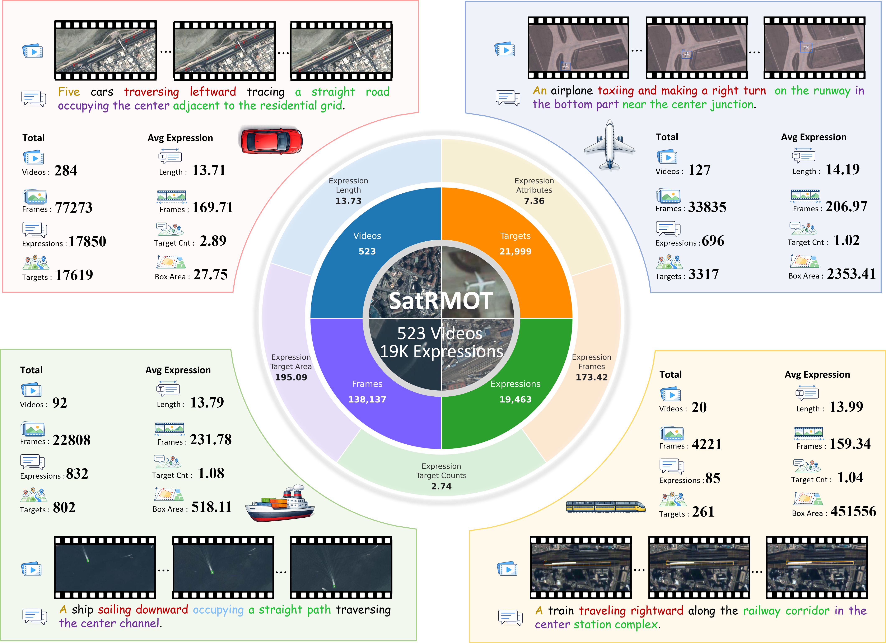
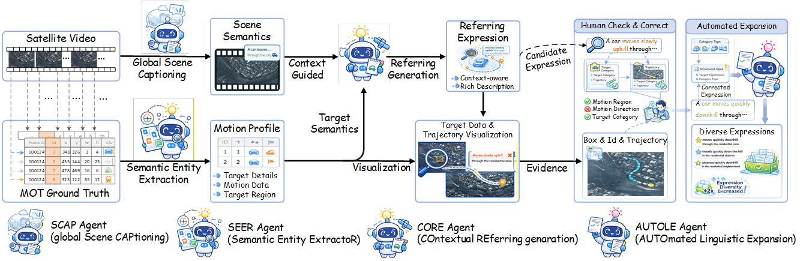

Abstract
Referring Multi-Object Tracking in satellite videos (RMOT-SV) aims to track multiple targets in remote sensing images using natural language descriptions, yet remains underexplored due to the lack of large scale and expressive datasets. Existing benchmarks are limited in scale, category diversity, and annotation richness, typically focusing on a few object classes with short and simple expressions. To address these limitations, we present SatRMOT, a large scale dataset for referring multi-object tracking in satellite videos, comprising 523 videos, 138k frames, and 19k referring expressions across four categories, with extensive annotations of tiny objects, particularly cars. A multi-agent collaborative framework is developed to enable richer annotations with multi-object descriptions, longer expressions, and fine-grained semantics involving motion, spatial relations, and contextual cues. Building upon this dataset, we propose Dual Refinement Track (DRTrack), which performs joint refinement in both visual and linguistic domains to better align small-object representations with rich referring expressions. Extensive experiments demonstrate the challenging nature of our dataset and the effectiveness of our method.
Category-wise Video Examples
Category-wise Image Examples

Category-wise image examples from SatRMOT. Each sample is annotated with a referring expression describing multiple targets using rich semantic cues, including object category, quantity, motion, spatial location, and structural context.
Dataset Statistics

Semi-Automatic Multi-Agent Framework for Rich Semantic Annotation

DRTrack